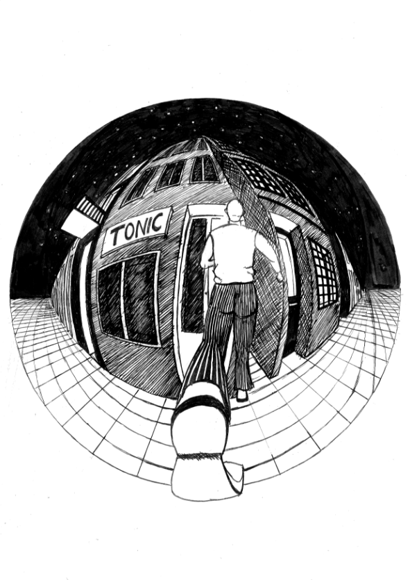
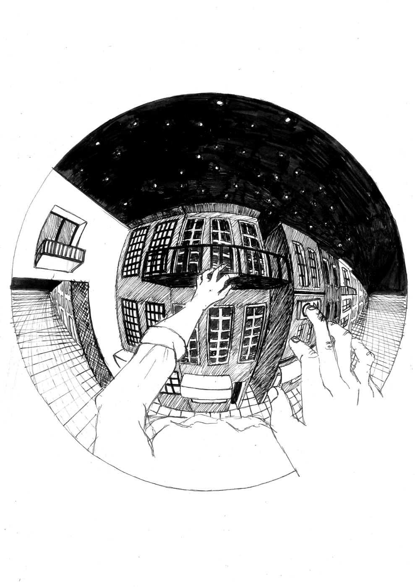
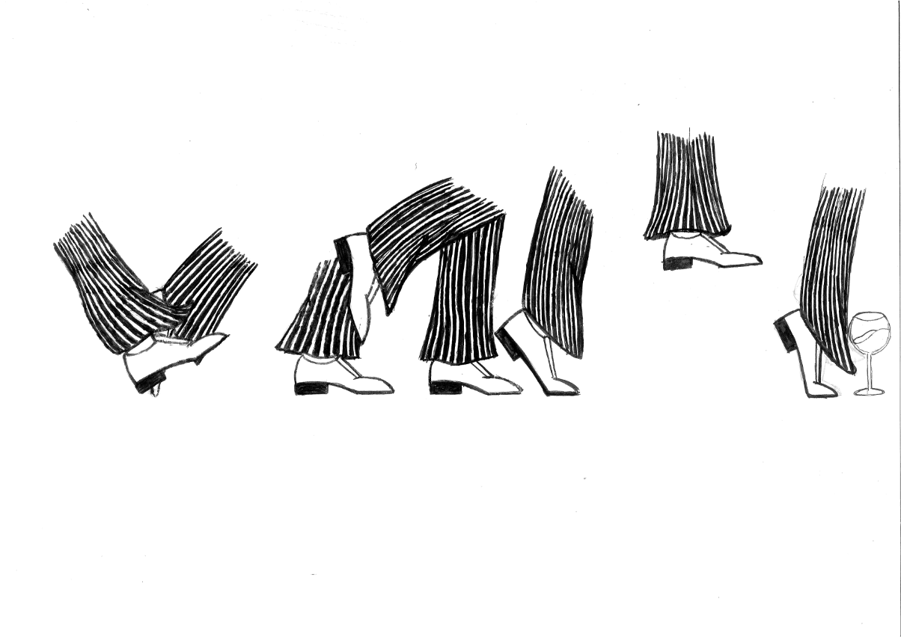
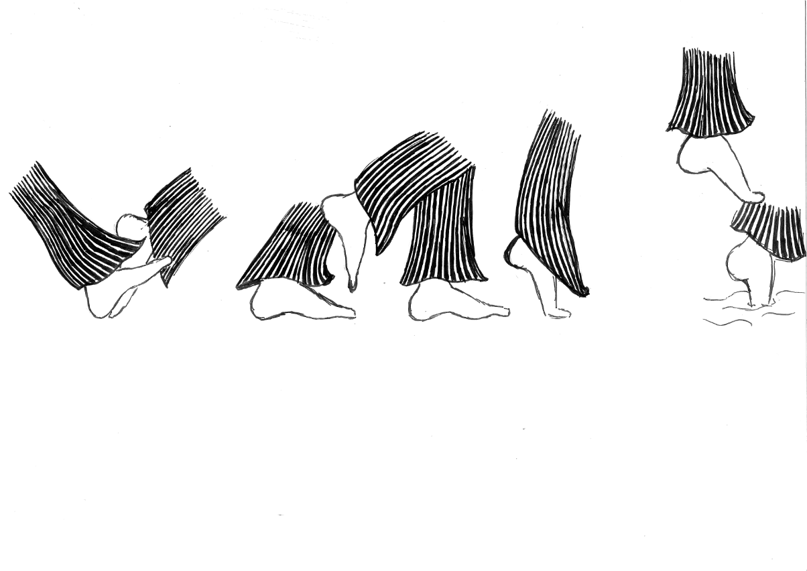

> "Os Contos do Gin-Tonic" by Mário Henrique-Leiria is a book with surreal content. The purpose of this proposal was to make illustrations for certain parts of the book, such as the cover, the guards, for a short story to choose from. When reading the tales I noticed a strong presence of distortion of reality. And my goal was to pass that feeling on to the observer. A good way to deform the real is the curvilinear perspective. Another concept to take into account is approximation / separation. There are moments when these stories seem real and others when they go beyond. When making the illustrations I paid attention to what I said above and the result speaks for itself.
   